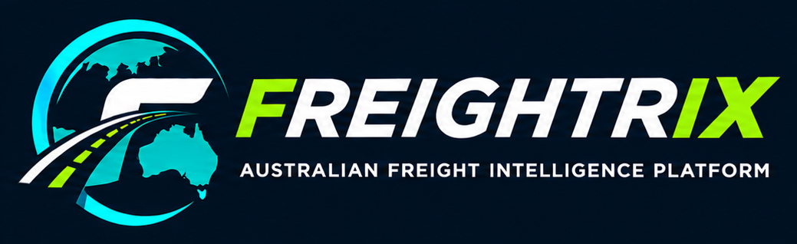

Know what is moving in freight before the first call.
Road, rail and port disruptions across every state, diesel and fuel levies, and the freight news that matters. In your inbox and in your ears by 6am.

Hume Freeway closed citybound at Craigieburn after serious crash
- Hume Freeway all citybound lanes closed at Craigieburn after a serious crash. Exit Wandong or Wallan. Affects Sydney to Melbourne and the Newell corridor.
- Grass fire at Tabbimoble causing smoke and reduced visibility on the M1 Pacific Motorway on the Sydney to Brisbane coast route. Drive to conditions.
- Spirit of Tasmania Geelong to Devonport sailing scheduled at 18:45 tonight had an estimated departure of 19:11. Check with the operator.
- AMSA has imposed new conditions on Spirit of Tasmania IV and V after another steering system failure on Saturday 21 November.
- Fuel cost recovery levy restarts today 23 November. Freight customers on eligible jobs must again cover higher fuel costs.
FIX Morning Briefing, Monday 23 November 2026
Interstate linehaul board
Every main freight leg in Australia, from official state road feeds, checked Mon 23 Nov 2026, 10:17 PM AEST.
| Linehaul leg | Status | Now |
|---|---|---|
| Melbourne to Brisbane (Newell) VIC NSW QLD | Closure | 6 unplanned · 1 closed · 6 planned Crash: Lanes closed on Hume Freeway, Amaroo-Hume IN Ramp ON |
| Sydney to Melbourne NSW VIC ACT | Closure | 1 unplanned · 1 closed · 20 planned Crash: Lanes closed on Hume Freeway, Amaroo-Hume IN Ramp ON |
| Sydney to Brisbane (coast) NSW QLD | Incidents | 4 unplanned · 0 closed · 18 planned Grass Fire on M1 Pacific Motorway, Tabbimoble |
| Brisbane to Cairns (Bruce) QLD | Incidents | 3 unplanned · 0 closed · 0 planned Hazard: Stationary vehicle on Bruce Highway, Burpengary East |
| Sydney to Adelaide (Sturt) NSW VIC SA | Incidents | 2 unplanned · 0 closed · 18 planned Fire: Changed conditions on Calder Highway, Conlans Road |
| Sydney to Brisbane (inland, New England) NSW QLD | Incidents | 1 unplanned · 0 closed · 5 planned Hazard: Road damage on New England Highway, Dalveen |
| Melbourne to Adelaide VIC SA | Incidents | 1 unplanned · 0 closed · 0 planned Hazard: Changed conditions on Western Highway, Dimboola-Rainbow Road |
| Brisbane to Darwin (Warrego, Landsborough, Barkly) QLD NT | Incidents | 1 unplanned · 0 closed · 0 planned Hazard: Road damage on Landsborough Highway, McKinlay |
| Adelaide to Perth (Nullarbor) SA WA | Clear | 0 unplanned · 0 closed · 0 planned No open incidents in official feeds |
| Adelaide to Darwin (Stuart) SA NT | Clear | 0 unplanned · 0 closed · 0 planned No open incidents in official feeds |
| Perth to Darwin (Great Northern, North West Coastal) WA NT | Clear | 0 unplanned · 0 closed · 0 planned No open incidents in official feeds |
| Tasmania: Hobart, Launceston, northern ports TAS | Clear | 0 unplanned · 0 closed · 0 planned No open incidents in official feeds |
What needs attention this morning
- Hume Freeway all citybound lanes are closed between Donnybrook Road and Amaroo Road at Craigieburn following a serious collision. Exit at Wandong or Wallan, or at Donnybrook Road onto Epping Road eastbound. This closure affects both the Sydney to Melbourne and Melbourne to Brisbane via the Newell corridor. VicTraffic
- Great Western Highway remains closed between Coxs River Road and Victoria Street at Mount Victoria in the Blue Mountains. This is a long running emergency roadwork closure. It affects freight moving to and from the NSW central west and the Barrier Highway route toward Adelaide. Live Traffic NSW
- Donohue Highway is closed to all traffic between Glenormiston and the QLD border with the NT due to flooding. Do not drive in flood waters. QLDTraffic
- Sandover Highway in the NT is closed between the Ampilatwatja turn off and Austral Downs due to flooding and road damage. NT Road Report
Diesel today and your fuel levy
Australian Institute of Petroleum terminal gate prices, 2026-11-20. Work out a levy from your own base price and fuel weighting, with the maths shown.
One platform, six ways in
FIX Morning Briefing
Critical road, rail and port disruptions on the main freight routes, plus the news that matters. Seven minutes to read.
Weekdays 6amAudio edition
The same briefing as a 7 to 9 minute audio bulletin for the cab or the drive in.
FridaysFIX Brief
The week in freight: linehaul reliability from our own log, diesel and levies, what is coming next week.
LiveAnalytics Re-Fuel
Fuel levy calculator on AIP terminal gate prices, with the maths shown and history to back it.
Every 15 minutesRoad information
Every state and territory, every interstate linehaul leg, closures first, with the official source linked.
ExplainerFIX ESG
Freight emissions in plain English: the global rules reaching Australian carriers and what to do now.
Freight emissions: the global picture and what it means for Australian freight
Your customers, their banks and their overseas buyers are all starting to ask about emissions. This briefing sets out the key numbers, the rules that are coming through the supply chain, and the first steps any carrier can take this year.
Get it before the first call
Free during launch. Daily, audio and weekly editions; pick any.